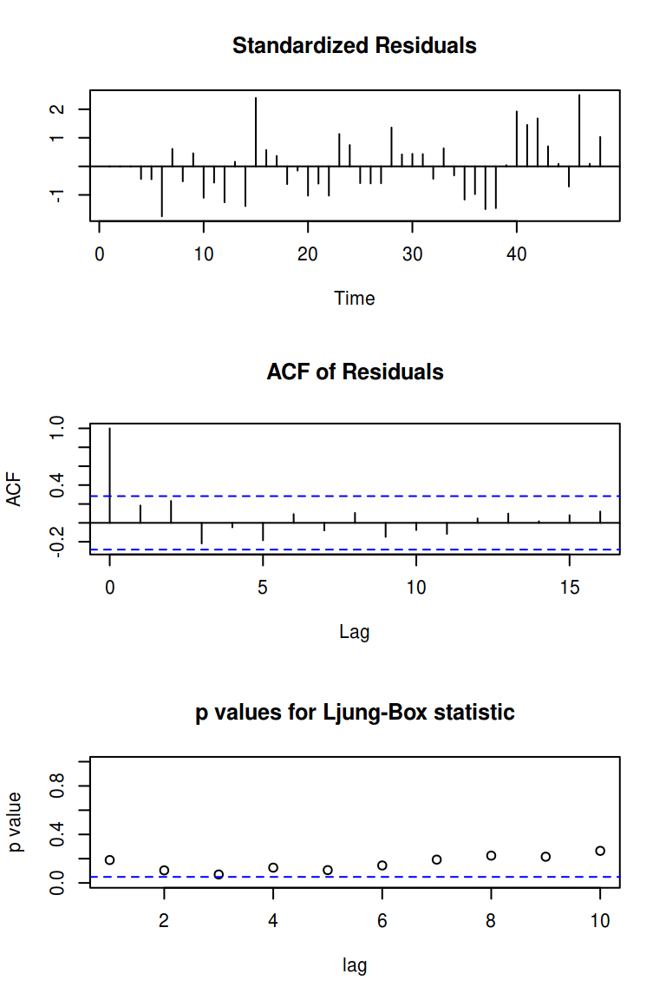
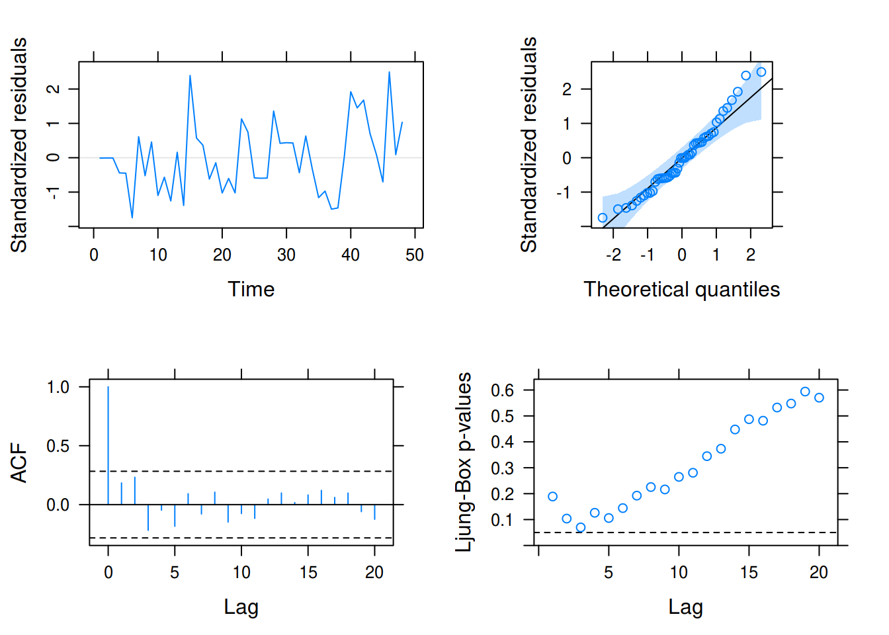
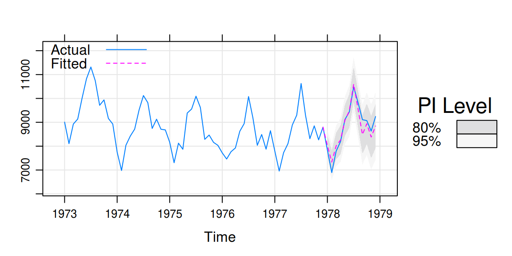
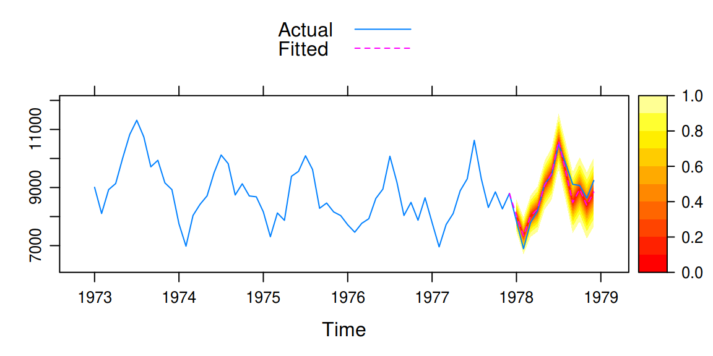

xyplot.lm(): Linear model diagnosticstactile provides an xyplot() method for lm objects – usually generated with stats::lm() or stats::glm(). It provides the same type of diagnostic plots that stats::plot.lm() covers, with some small modificiations.
This method is provided so that a user may use lattice graphics throughout out a document, say for a lab report, and produce consistent graphic material that can be changed on a general level (for instance by using lattice.options()).
We fit a simple linear model
Here, we fist use the default option and plot the diagnostics using stats::plot()
Plot diagnostics with stats::plot.lm().
Or instead use the method provided by tactile.
Plot diagnostics with xyplot.lm().
You will see that the results are similar. The benefits, however, of using xyplot.lm() from tactile are that
lattice are respected (mostly), andpar(mfrow = c(2, 2)). The plots are arranged via gridExtra::grid.arrange() automatically and arguments nrow and ncol have been made accessible in the xyplot.lm() call to enable manual specifications.xyplot.Arima: ARIMA Model DiagnosticsThis function is similar to xyplot.lm() but is modelled after stats::tsdiag(). First, we look at the output from the original.

To use the method from tactile, we just call xyplot() on the model fit. The most prominent difference here is that we’ve added a Q-Q plot of the standardized residuals as well, but also that we’re correcting the the Ljung–Box test to account for the fact that we’ve fit a model (see this).

xyplot.forecast(): Plotting forecasts with tactileRobert Hyndman’s excellent forecast package has built-in functions for plotting forecasts. These have been reworked to use lattice graphics in tactile, and also try to place the forecasts on the time scale of the original data (if such is provided).
For this example, we user USAccDeaths, a time series giving the monthly totals of accidental deaths in the USA. We begin by separating the series into a training and test set.
library(forecast)
train <- window(USAccDeaths, c(1973, 1), c(1977, 12))
test <- window(USAccDeaths, c(1978, 1), c(1978, 12))Then we fit the model and plot the results.
fit <- arima(train, order = c(0, 1, 1), seasonal = list(order = c(0, 1, 1)))
fcast1 <- forecast(fit, 12)
xyplot(fcast1, test, grid = TRUE, auto.key = list(corner = c(0, 0.99)),
ci_key = list(title = "PI Level"))
A so called fan plot can be achieved by increasing the number of prediction intervals in the call to forecast. We also switch to a separate color palette by using the ci_pal argument.
# A fan plot
fcast2 <- forecast(fit, 12, level = seq(0, 95, 10))
xyplot(fcast2, test, ci_pal = heat.colors(100))